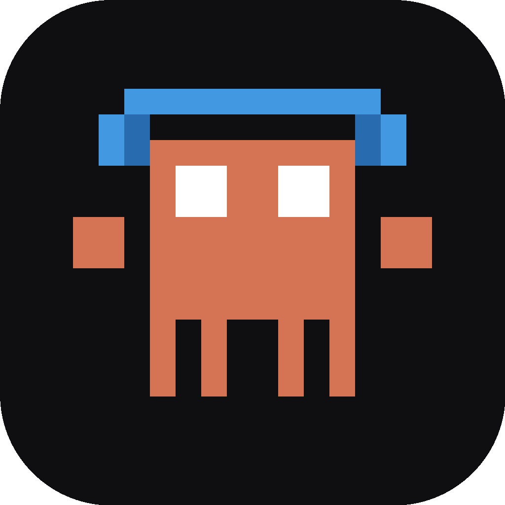

LIVE NOW
CLAUDE FM
music for thinking & building
↓ DOWNLOAD FOR MACOS
LOADING CLAUDE FM...
BUY ME A COFFEE
C VISWANATH
SCAN WITH ANY UPI APP
GPAY · PHONEPE · PAYTM
INSTALL HELP
IF MACOS BLOCKS THE APP:
① DRAG CLAUDEFM TO APPLICATIONS
② OPEN TERMINAL AND RUN:
③ THEN DOUBLE-CLICK NORMALLY
— OR —
SYSTEM SETTINGS → PRIVACY & SECURITY → "OPEN ANYWAY"